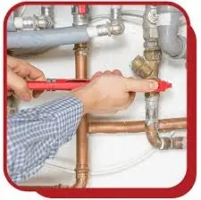
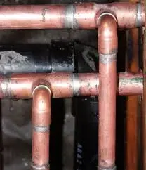

Repipe Pipelining Services in San Diego
EZ Heat and Air is proud of its standing as a leader in offering Repipe Pipelining solutions in San Diego, offering cheaper alternatives to deteriorating or old plumbing.
A pipelining service can be carried out at any residential or commercial setting, and when done at Pipelining & Repiping in San Diego, it is bound to have that plumbing fixed and working with normal efficiency once again.
Our expertise ensures minimal disruption since we employ advanced technology to repair and repipe without the headache of tearing down walls or digging up floors.
Comprehensive Range of Repiping and Pipelining Services in San Diego
Pipe Inspection Services
EZ Heat and Air performs thorough pipe inspections to detect leakage, corrosion, or obstruction within your plumbing system. Our expert technicians use diagnostic tools that ensure proper evaluations and correct assessments for proper implementation of Repipe Pipelining.
Repairing Non-Invasive Pipes
With their expertise in non-invasive pipe repair, EZ Heat and Air can restore your plumbing system with no disturbance. Innovative methods are used by our San Diego Repiping or Pipelining Services to fix damage, stop leaks, and enhance water flow.
Full System Repiping
Our team offers full system repiping to replace old or severely damaged pipes. EZ Heat and Air's repiping in San Diego services improve the longevity and performance of your plumbing system by using high-quality, contemporary materials.
Plumbing Repairs in an Emergency
For critical problems like burst pipes or serious leaks, EZ Heat and Air provides 24/7 emergency plumbing repair services. To stop additional harm, our experts act fast to restore functionality.
Benefits of Pipelining & Repiping in San Diego by EZ Heat and Air

With EZ Heat and Air, Repiping has many benefits to property owners in San Diego. One such benefit is minimal disruption. Unlike the traditional repiping methods, Pipelining and repiping San Diego service employs modern techniques that require no demolition.
Another advantage is enhanced durability. Modern materials used in repiping are resistant to corrosion, root intrusion, and leaks, ensuring your plumbing system lasts for decades. Additionally, the process improves water flow by removing blockages.

FREE
Estimate
Request a quote and get a free estimate for installation, repair, and replacement services from professionals

FREE
Service Call
From plumbing repairs to full replacements, connect with our experts to inquire about services at zero charges

15%
Discount Available
15% Off to the Police, Military, Fire Seniors and Teachers for Services up to $1000.

FINANCING
Available
Overcome financial barriers and keep your plumbing system up to date with our alternative financing options.

24/7
Service
Same-day Plumbing Service For Any Issue Or Concern Related To Leakage, Clogging, Or Malfunctioning Of Appliances.
Don't Let Plumbing Issues Interrupt Your Comfort & Budget
CALL EXPERTS NOW
 (760) 392 7616
(760) 392 7616
What Our Clients Say About Us
"I’ve been using their air conditioner maintenance service for years, and it’s always top-notch. Their team is quick, professional, and thorough..."
Sarah M. - San Diego
"Excellent service! I called for air conditioner maintenance before summer, and their technician arrived right on time..."
John L. - Riverside
Why to Repipe Pipelining in San Diego by EZ Heat and Air
Non Invasive Solutions
One of the key benefits of repiping is that it is non-invasive. Unlike traditional repiping, which involves tearing walls down or digging into floors.
Unmatched Durability
Our advanced materials and techniques extend the lifespan of your plumbing system by decades, ensuring resistance to corrosion, leaks, and root intrusion.
Tailored Customization
Repiping Consultation San Diego ensures that solutions are tailored to every customer. We evaluate variables such as pipe material, layout, and particular problems.

FAQs
Pipelining repiping is a technique where old pipelines are fixed without having to replace them. Using advanced technology, a tough liner is installed inside damaged pipes, closing the leak and making it functional once more.
Most San Diego Repiping Services take only a few days to complete and cause minimal disruption.